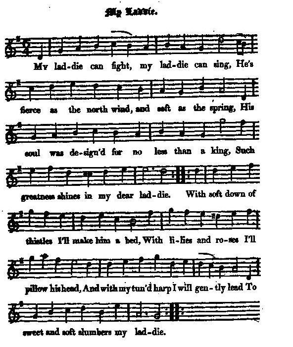

My Laddie
Le jeune homme
A song on the birth of Prince Charles
Chant d'anniversaire de Charlie
(Partly) by his mother, the Princess Clementina Sobieska (?)
Tune - Mélodie"The bonny black Laddie"
from Hogg's "Jacobite Reliques" , Volume I, N°69, 1819
Sequenced by Christian Souchon
|
To the tune
:
The second half of the first verse appears in Peter Buchan's MS Collection of Ancient Ballads and Songs and, under N° 119, page 272 in the "Songs of Herd's Manuscripts" publihed by Hans Hecht in 1904. With roses and lillies I'll pillow his head, Of the down of the thistle I'l make him a bed, And the string of the harp I will gently lead And ease and sweet slumber my laddie. The song is preceded by the remark (beside a margin note "I can't recollect the first verse"): TUNE: "The Bonnie Black Laddie", by the Princess Sobieskie ". [ Maria Clementina Sobieska , 1702 - 1735, is Charlie's mother]. According to Glen, quoted by "The Fiddler's Companion" (see links), the tune was first published by Neil Stewart in his 1761 collection, pg.70. As for Hogg, he states: "This is rather a good song: I am sure the bard who composed it thought it so and believed that he had produced some of the most sublime verses that had ever been sung since the days of Homer." (Does Hogg hide under sarcasm unavowed pro-Jacobite feelings?) Source "Hogg's Jacobite Relics". |
 |
A propos de la mélodie:
La seconde moitié du 1er couplet apparait chez Peter Buchan, dans sa "Collection de ballades et chansons anciennes , ainsi que dans le chant N°119, page 272 des "Chants tirés des manuscrits de Herd", publiés par Hans Hecht en 1904; Son oreiller sera de roses, de lis, Du duvet des chardons, je veux lui faire un lit, Ce seront les cordes de ma harpe qui Berceront le sommeil du jeune homme... (Outre la note "Je ne me rappelle pas le 1er couplet"), le chant est précédé de la remarque: MELODIE:"Le beau garçon brun", par la Princesse Sobieskie". [ Marie Clementine Sobieska , 1702 - 1735, est la mère de Charlie]. Selon Glen, cité par le "Fiddler's Companion" (cf. liens), la mélodie fut publiée pour la 1ère fois par Neil Stewart dans son Recueil de 1761, pg.70. Quant à Hogg, il écrit: "Cette chanson n'est pas mauvaise: je suis certain que le barde qui l'a composée le savait et était même persuadé d'avoir composé les vers les plus sublimes qui aient été écrits depuis l'époque d'Homère." (Cette remarque sarcastique de Hogg vise-t-elle à masquer des sentiments pro-Jacobites inavoués?). Source "Reliques Jacobites" de Hogg. |

|
MY LADDIE [1]
1. My laddie can fight, my laddie can sing, He's fierce as the north wind, and soft as the spring, His soul was design'd for no less than a king, Such greatness shines in my dear laddie. With soft down of thistles I'll make him a bed, With lilies and roses I'll pillow his head, And with my tun'd harp I will gently lead [2] To sweet and soft slumbers my laddie. 2. Let thunderbolts rattle on mountains of snow, And hurricanes over cold Caucasus blow; Let care be confin'd to the regions below, Since I have got home my dear laddie. Let Sol curb his coursers, and stretch out the day, That time may not hinder carousing and play; And whilst we are hearty be every thing gay Upon the birth-day of my laddie. 3. He from the fair forest has driven the deer, And broke the curs'd antler the creature did wear, [3] That tore up the bonniest flowers of the year, That bloom'd on the hills of my laddie. Unlock all my cellars, and deal out my wine, Let brave Britons toast it till their noses shine, And a curse on each face that would seem to decline To drink a good health to my laddie. Source: Jacobite Minstrelsy, published in Glasgow by R. Griffin & Cie and Robert Malcolm, printer in 1828. |
LE JEUNE HOMME [1]
1. Le jeune homme chante, aussi bien qu'il combat: Il est aquilon et zéphyr à la fois, Une âme telle que seuls en ont les rois. Que de grandeur chez ce jeune homme! Du duvet des chardons, je veux faire un lit, Un mol oreiller, des roses et des lis, Et ma harpe alors doucement bercera [2] Le sommeil de ce jeune homme. 2. L'éclair peut tonner sur le mont enneigé, Sur le Caucase l'ouragan peut souffler. Les chagrins de l'enfer rester prisonniers, Puisqu'il nous est né, ce jeune homme! Pour que dure le jour, Sol, retient son char, Que nos jeux, nos plaisirs s'achèvent plus tard, Qu'à cette grande fête tous prennent part: La naissance du jeune homme! 3. De la forêt il a fait sortir le cerf Et de la bête a brisé les bois pervers [3] Qui saccagèrent les plus charmantes fleurs Dont s'ornent les prés du jeune homme. Ouvrez tous mes celliers et versez mon vin Pour des libations dont s'empourpre le teint. Honte aux faces qui ne reflèteraient point Ces toasts portés au jeune homme! (Trad. Christian Souchon(c)2009) |
|
[1]
"Upon the birthday of my laddie"
(verse 2): Both the sentiment and the expression are poetical, and in its general strain it rises above the common run of those merely loyal effusions which the Jacobite muse of that particular period so profusely and zealously discharged. Hogg says he got it out of Mr Scott's manuscript collection, and afterwards collated it with another copy which he found in young Dalguise's collection. (Concerning these curious editing methods, see
article "Hogg"
and the song
Jamie the Rover
).
[2] Thistle, lily, rose, harp : symbols for Scotland, France, England and Ireland, the countries that, truly or allegedly, supported the Prince's venture. [3] "Broke the cursed antlers" : the enemies of the Stuarts. |
[1]
"La naissance du jeune homme"
(2ème strophe): Les sentiments et le style sont romantiques et la qualité de la pièce l'élève au dessus des simples effusions de loyauté où se complait la muse Jacobite de l'époque. Hogg nous dit qu'il l'a tiré d'un manuscrit appartenant à la collection de Walter Scott et l'a corrigé à l'aide d'une autre version, trouvée dans la collection de M. Dalguise, le jeune. (A propos de ces curieuses méthodes éditoriales, cf.
article "Hogg")
et
et le chant
Jacques dans l'errance
)
[2] Chardon, lis, rose et harpe : symboles des pays qui soutenaient - de façon plus ou moins active - l'entreprise du Prince. [3] "Brisé les bois" : les ennemis des Stuarts. |